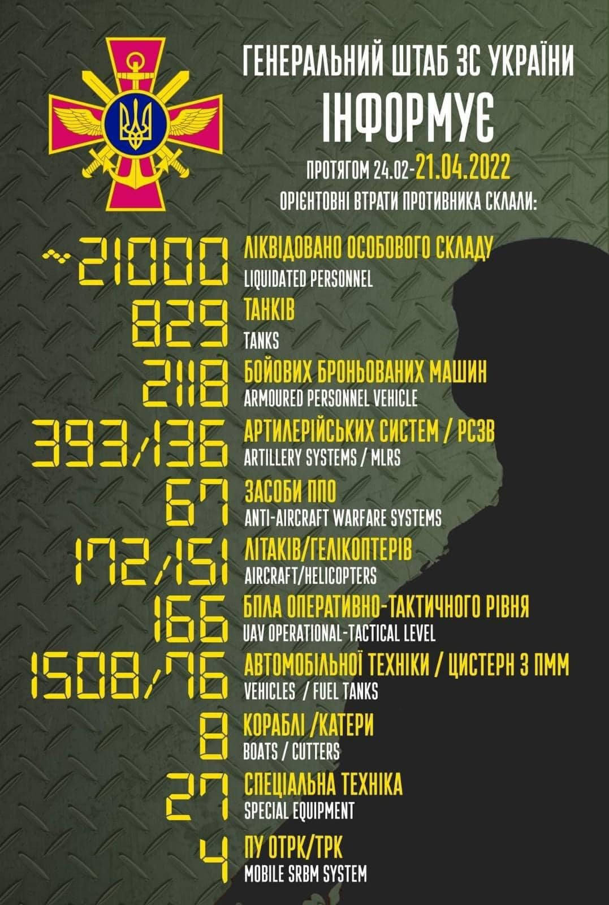

Оперативна інформація станом на 18.00 10.04.2022 щодо російського вторгнення
Триває сорок шоста доба героїчного протистояння Українського народу російському воєнному вторгненню.
Російська федерація продовжує повномасштабну збройну агресію проти нашої Держави. Ворог намагається завершити підготовку до проведення наступальної операції на сході України. Тривають заходи щодо перегрупування, нарощування системи управління та матеріально-технічного забезпечення військ противника. Окупанти здійснюють переміщення батальйонних тактичних груп зі складу Східного та Центрального військових округів до прикордонних з Україною районів Бєлгородської, Воронезької та Курської областей.На Волинському, Поліському і Сіверському напрямках суттєвих змін в положенні та діяльності військ противника не відзначається.
На Слобожанському напрямку окупанти продовжують частково блокувати місто Харків. Не полишають спроб прорвати оборону українських військ у районі міста Ізюм, проводять розвідку імовірних напрямків подальших дій.
Не виключається нарощування зусиль противником у напрямку на Слов’янськ, частиною сил - на Барвінкове. Існує ймовірність активізації бойових дій за місто Харків.
Ворог має низку проблем у матеріально-технічному забезпеченні угруповання військ Західного військового округу. Це нестача запасних частин, окремих типів артилерійських боєприпасів, а також недосконалість системи зберігання та постачання матеріально-технічних засобів.
На Донецькому і Таврійському напрямках противник зосереджує основні зусилля на взятті під контроль населених пунктів Попасна, Рубіжне, Нижнє і Новобахмутівка. Окупанти не полишають спроб взяти під повний контроль місто Маріуполь.
З метою посилення системи протиповітряної оборони на Донецькому напрямку окупанти здійснили переміщення дивізіону зенітних ракетних комплексів середньої дальності С-350 “Вітязь” до району міста Таганрог Ростовської області.
Для відновлення втрат збройних сил російської федерації здійснюється переміщення на територію України додаткового озброєння та військової техніки з Південного військового округу.
Очікуються спроби противника наявним складом військ прорвати нашу оборону та здійснити просування до районів населених пунктів Сєверодонецьк, Попасна, Авдіївка та Курахове.
На Південнобузькому напрямку ворог намагався відновити своє положення – зайняти втрачені позиції в районі населеного пункту Осокорівка. Імовірно, ворог намагатиметься здійснити спробу виходу на адміністративні кордони Херсонської області.
На тимчасово зайнятих територіях окупаційні війська продовжують заходи щодо обмеження прав та свобод громадян України. Продовжують грабунки та вбивства цивільних мешканців.
Сили оборони продовжують утримувати визначені рубежі, нищити ворога та звільняти від загарбника Українські землі.
Загальні бойові втрати противника з 24.02 по 13.04 орієнтовно склали / The total combat losses of the enemy from 24.02 to 13.04 were approximately:
особового складу / personnel – близько/ about 19800 осіб,
танків / tanks ‒ 739 од,
бойових броньованих машин / APV ‒ 1964 од,
артилерійських систем / artillery systems – 358 од,
РСЗВ / MLRS – 115 од,
засоби ППО / Anti-aircraft warfare systems – 64 од,
літаків / aircraft – 158 од,
гелікоптерів / helicopters – 143 од,
автомобільної техніки / vehicles – 1429 од,
кораблі /катери / boats / cutters – 7 од,
цистерн з ПММ / fuel tanks – 76,
БПЛА оперативно-тактичного рівня / UAV operational-tactical level – 132.
Спеціальна техніка / special equipment – 25.
Пускові установки ОТРК/ТРК / mobile SRBM system – 4.
Дані уточнюються. Підрахунок ускладнюється високою інтенсивністю бойових дій.
/ Data are being updated. The calculation is complicated by the high intensity of hostilities.
доба героїчного протистояння Українського народу російському воєнному вторгненню: ситуація станом на ранок 13 квітня Ворог не перестає завдавати ракетно-бомбових ударів по об’єктах цивільної інфраструінфраструктури у Харківській та Запорізькій областях. Активно веде повітряну розвідку.
До 26 квітня російська федерація ввела в прикордонних з нашою державою районах та на тимчасово окупованій території Криму так званий “жовтий рівень терористичної загрози”. Вказані заходи проводяться, імовірно, з метою організації переміщення військової техніки, озброєння та особового складу на територію України.
На Слобожанському напрямку продовжується часткове блокування та артилерійські обстріли міста Харкова. На деяких тимчасово зайнятих територіях ворог вдається до формування підрозділів так званої “народної міліції”.
На Донецькому і Таврійському напрямках противник продовжував завдавати авіаційних ударів по Маріуполю. Веде наступ в районі металургійного комплексу Азовсталь та морського порту.
На Південнобузькому напрямку ворог намагається оволодіти окремими населеними пунктами, успіху не має.
На території Донецької та Луганської областей захисниками України за минулу добу відбито шість атак ворога, знищено дві одиниці автомобільної техніки та три артилерійські системи противника.
Угрупованням Повітряних Сил ЗСУ за попередню добу збито ворожий літак Су-25. Противник суттєво зменшив використання авіації у зв’язку з погодними умовами.
Українські десантники звільнили декілька населених пунктів на півдні країни Про це повідомляє Командування Десантно-штурмових військ. Детальніше: Нещодавно підрозділи 80 окремої десантно-штурмової бригади ДШВ провели операцію щодо знищення сил рф. Українські захисники завчасно провели необхідні заходи для виявлення та подавлення вогнем пунктів управління, а також вогневих засобів та інших важливих об’єктів ворога. Після цього штурмові підрозділи провели наступальні дії. Отримавши значні втрати, окупанти були деморалізовані та почали відступати. В результаті десантники звільнили від окупації декілька українських населених пунктів.
Оперативна інформація станом на 18.00 13.04.2022 щодо російського вторгнення
Триває сорок дев’ята доба героїчного протистояння Українського народу російському воєнному вторгненню.
Ворог продовжує завдавати систематичних ракетно-бомбових ударів по об’єктах інфраструктури у Харківській та Запорізькій областях.
На Волинському, Поліському та Сіверському напрямках підрозділи противника активних дій не проводили. Російські окупанти здійснюють переміщення окремих підрозділів на визначені напрямки.
На Слобожанському напрямку триває часткове блокування ворогом Харкова. У зв’язку з неможливістю його захоплення, збройні сили російської федерації продовжують артилерією знищувати інфраструктуру міста.
На Донецькому і Таврійському напрямках, за наявною інформацією, противник перебуває в готовності до наступальних дій. Продовжує зосереджувати основні зусилля на захопленні окремих кварталів міста Маріуполя та завдавати авіаційних ударів.
Ворог намагається проводити штурмові дії в районах населених пунктів Сєверодонецьк, Рубіжне та Попасна.
На Південнобузькому напрямку противник проводить повітряну розвідку з метою виявлення підрозділів Збройних Сил України.
У бойових діях на частині територій південно-східних областей України у складі угруповання військ противника діють окремі підрозділи 103-го, 109-го, 113-го, 125-го та 127-го мотострілецьких полків. Їх комплектування здійснювалося під час примусової мобілізації чоловіками з тимчасово окупованих територій Донецької і Луганської областей. Структурно зазначені полки нараховують до 5-ти батальйонів чисельністю близько 300 військовослужбовців у кожному. Досвід ведення бойових дій мають лише 5-10 відсотків особового складу зазначених підрозділів. Управління полків складається з офіцерів збройних сил російської федерації. Ці формування мають значні проблеми із забезпеченням озброєнням, боєприпасами та медикаментами.
Ворог продовжує протиправні дії стосовно цивільного населення на тимчасово зайнятих територіях. Росіянами проводяться перевірки документів, особистих речей та мобільних телефонів. Також окупанти здійснюють примусові перевірки помешкань.
На деяких зайнятих територіях Харківської області ворог вивів з ладу мережу стільникового зв’язку. Російські окупанти здійснюють агресивний інформаційно-психологічний вплив на населення. Він, здебільшого, спрямований на спроби переконання у безперспективності боротьби проти російських окупаційних військ.
Закликаємо громадян не вірити ворожій пропаганді та продовжувати тотальний спротив.
Знаковим є те, що окупаційні війська продовжують зазнавати втрат на тимчасово зайнятих територіях. Так, у період з 20 березня по 12 квітня цього року, в місті Мелітополь Запорізької області близько 70 військовослужбовців збройних сил російської федерації загинули під час патрулювання території в нічний час.

Загальні бойові втрати противника з 24.02 по 21.04 орієнтовно склали
/ The total combat losses of the enemy from 24.02 to 21.04 were approximately:
особового складу / personnel - близько/ about 21000 осіб ліквідовано / persons were liquidated,
танків / tanks ‒ 829 од,
бойових броньованих машин / APV ‒ 2118 од,
артилерійських систем / artillery systems – 393 од,
РСЗВ / MLRS - 136 од,
засоби ППО / Anti-aircraft warfare systems - 67 од,
літаків / aircraft – 172 од,
гелікоптерів / helicopters – 151 од,
автомобільної техніки / vehicles - 1508 од,
кораблі /катери / boats / cutters - 8 од,
цистерн з ПММ / fuel tanks - 76,
БПЛА оперативно-тактичного рівня / UAV operational-tactical level - 166.
Спеціальна техніка / special equipment - 27.
Пускові установки ОТРК/ТРК / mobile SRBM system - 4.
Оперативна інформація станом на 18.00 22.04.2022 щодо російського вторгнення
Триває п’ятдесят восьма доба героїчного протистояння Українського народу російському воєнному вторгненню.
Ворог продовжує ведення повномасштабної збройної агресії проти України.
На Волинському і Поліському напрямках противник активних дій не здійснював. Спостерігається нарощування систем радіоелектронної розвідки та радіоелектронної боротьби у прикордонних з Україною районах Гомельської області. В районах населених пунктах Клімовка та Димамерки розгорнуто пости постановки радіоперешкод підрозділами зі складу 48-го окремого батальйону радіоелектронної боротьби західного оперативного командування збройних сил республіки білорусь. Крім того, противник провів тренування чергових сил і засобів протиповітряної оборони.
Зберігається загроза завдання ракетно-авіаційних ударів по об’єктах цивільної та військової інфраструктури України з території республіки білорусь.
На Сіверському напрямку підрозділи прикордонної служби ФСБ
російської федерації продовжують здійснювати посилену охорону українсько-російського кордону в Брянській та Курській областях. Триває перегрупування військ ворога.
На Слобожанському напрямку окупанти силами підрозділів зі складу 6-ї загальновійськової армії, балтійського та північного флотів продовжують часткове блокування міста Харкова, намагаються здійснювати вогневе ураження підрозділів наших військ та об’єктів критичної інфраструктури.
На Ізюмському напрямку ворог проводить повітряну розвідку позицій наших військ з метою визначення можливих напрямків наступу. Для покращення тактичного положення підрозділів противник намагався здійснювати наступальні дії у напрямках населених пунктів Заводи та Дібровне, успіху не має.
На Донецькому і Таврійському напрямках бойові дії відбувалися вздовж всієї лінії зіткнення.
Протягом доби ворог здійснював штурмові дії у напрямку міста Слов’янськ, закріпився в населеному пункті Лозове. В районах Зеленої Долини та Кремінної противник продовжує закріплюватись на зайнятих позиціях, здійснює перегрупування та підготовку до наступальних дій.
Противник здійснив посилення угруповання військ за рахунок переміщення з території російської федерації окремих підрозділів 41-ї загальновійськової армії Центрального військового округу. Безуспішно намагається закріпитись в населеному пункті Рубіжне.
В районі Попасної ворог проводив штурмові дії в напрямку населеного пункту Новотошківське та вглиб населеного пункту Попасна, успіху не має. Закріпився в центральній частині населеного пункту Степне.
На Авдіївському та Курахівському напрямках окупанти намагалися здійснювати штурмові дії, успіху не мають.
На Маріупольському напрямку противник продовжував завдавати авіаційних ударів по Маріуполю та блокувати наші підрозділи в районі “Азовсталі”.
На Запорізькому напрямку окупанти здійснювали штурмові дії в напрямку населеного пункту Зелене Поле, успіху не мають. Ворог посилив угруповання за рахунок переміщення підрозділів 19-ї мотострілецької дивізії 58-ї загальновійськової армії Південного військового округу. Разом з тим, батальйонна тактична група 127-ї мотострілецької дивізії 5-ї загальновійськової армії втратила боєздатність та виведена в район відновлення.
На Південнобузькому напрямку, в районі населеного пункту Олександрівка, ворог здійснює оборону зайнятих позицій. Проводить повітряну розвідку. Не виключається ведення штурмових дій з метою виходу на адміністративні межі Херсонської області.
За наявною інформацією, особовий склад окремої групи російських військ у так званій “придністровсько-молдавській республіці” несе службу у повсякденному режимі. Водночас, залишається імовірність використання території невизнаної республіки для агресії проти України.